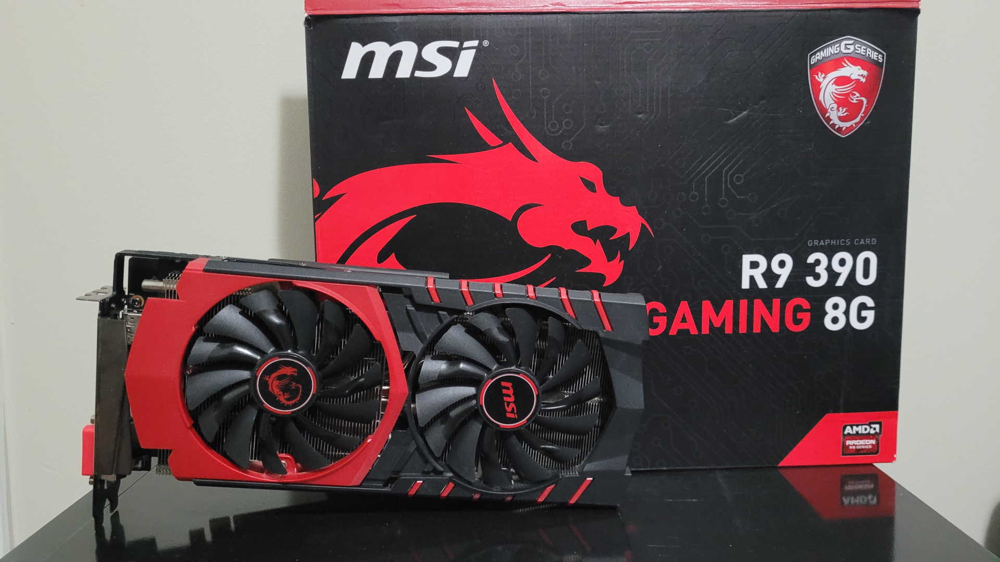
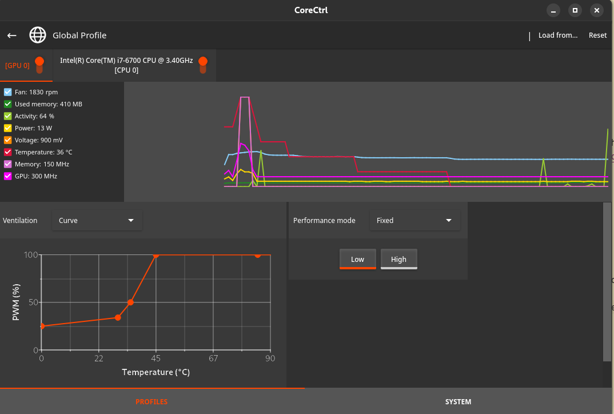

Free GPU: Too Good to be True
2023-06-30
About a month ago, my dad and I went to drop off some e-waste at the local school. As I'm always curious, I took a bit of time looking through the dumpster in search of anything cool. In the corner of my eye, I spotted a black and red box and immediately knew what it was. I saw the MSI dragon branding and got excited. It was an MSI Radeon R9 390.

I was excited for a few reasons. My current GPU, the Nvidia GeForce GT 730 (released 2014), is even older than the R9 390 (released 2015) and was considered a low-end card even back then. The 390, on the other hand, was considered more high-end, somewhere in between the performance of Nvidia's GTX 980 and 980 Ti. Nvidia cards on Linux can be hit or miss; their drivers are proprietary and the open-source Nouveau drivers leave much to be desired. AMD's open-source drivers are much better for that reason. On top of all that, this particular 390 boasts 8GB of VRAM, which means it has the potential to run modern games that depend on such large RAM sizes. Working with AI can also require a beefier GPU and lots of VRAM, not to mention other applications like video editing and such. All these positives right at my fingertips because someone thought this GPU was worthy of being e-waste.
Once I got home, I tried testing the GPU. My sister's PC had a powerful enough power supply and the right PCIe power connectors for it to work, and to my surprise, the R9 390 actually displayed the window. It wasn't pretty; the resolution was fixed at 800x600 stretched and there were no drivers installed so Windows must've been using safe graphics. It looked promising though. I bought a cheap 700W power supply second-hand to test the GPU on my own PC.
After installing AMDGPU drivers and messing around with a lot of settings, I was unsuccessful in installing it on Debian 11. I thought perhaps some distros could work out of the box with the R9 390. The Arch Linux Wiki mentions fixes that can be applied specifically to R9 390s, so I thought maybe some Arch-based distros had a fix. I tried Manjaro, EndeavorOS, and finally Fedora. Fedora seemed to be the most functional distro; even my wifi adapter worked instantly. So, I tried troubleshooting with Fedora for a few days. I changed every kernel parameter and eventually settled on something that worked.
The fans would not spin for some reason though. The drivers for sure worked, but the card would get too hot and would black screen, with the system still on. After letting the GPU cool for a few minutes, I could try again. I had to find a program that would allow me to blast the fans at full speed in the meantime. Note: You should just use CoreCtrl if you need a fan curve that is functional.
With the fans on blast, I could actually use the system for more than a few seconds. Success at last! I installed CS:GO just to test out the GPU and I was elated when I was able to run the game at 1080p at more than 100fps on high settings! As I played deathmatch, everything was going smoothly, until disaster struck once again. The GPU black screened again. After trying a few more times, I would get the same issue. Even with the fans on full speed, the GPU would still get too hot.
I was sure that the GPU was getting too hot since I could physically feel it getting hot, but also because after crashing, I wouldn't be able to turn on my computer and get into Fedora, but if I waited 20-30 minutes, I would be able to use the computer. If I don't play a game or push the GPU too hard, I would be able to use it with no problems.
I ordered some thermal paste and thermal pads, replacing as much as I could. This was my first time taking apart a GPU and replacing thermal pads and thermal paste. As I put everything back together, I held my breath as I turned my PC on. I sighed in relief as I saw the screen output. But did it fix the problem? I booted up CS:GO and played a deathmatch. For the first time, I was able to play an entire deathmatch (10 minutes) without black screening. Success! I played another 2 deathmatches and it was still going strong!
To celebrate, I tried loading into Ancient, the hardest map to run in CS:GO's competitive map pool. As the map was loading though, I saw the same familiar black screen of death.
To be honest, I don't know what the problem is now. Maybe there are some parts that are still not getting enough cooling. My computer case is very much meant for low-power parts so it doesn't have the best cooling. But even still, I removed as many panels as I could when testing and more importantly, I saw the temperatures of the GPU were supposedly at most 50°C. The GPU should be able to handle much more than that though. My best guess is that some temperature controller/sensor is broken and/or the GPU is suffocating.
After lots of effort on my end, I decided to stop working on this GPU. While it's definitely better than my GT 730, it simply does not work, and that's the minimum requirement for me. It's not the ending any of us wanted, but that's just how it is for right now. While I didn't get a sick GPU upgrade for free, I definitely learned a lot of things:
-
AMD GPU Drivers aren't bulletproof; sometimes there is some massaging required to get them to perform properly.
-
UNIX has this philosophy that "everything is a file", including your hardware (on Linux that would be your /dev folder). You can find lots of information about your hardware by reading through these files.
-
The importance of Reddit as many subreddits were down due to the strike
-
A lot of information about GPUs
-
How to apply thermal paste and thermal pads properly
-
If it's too good to be true, then it probably is...unless...
Update September 2023
The itch to work on the GPU came again and I decided to try a few things again. Firstly, I basically followed the instructions of this website for the right drivers and kernel parameters.
These are the new kernel parameters that I use:
radeon.cik_support=0 amdgpu.cik_support=1 amdgpu.ppfeaturemask=0xffffffff
amdgpu.ppfeaturemask=0xffffffff is used so that I can control the power with CoreCtrl, which is absolutely necessary.
CoreCtrl actually saved my entire setup too, as I just had to set the gpu to performance mode with an aggressive fan curve.

And just like that, it seemed to be stable enough to not crash. I've been using this GPU for my setup and even played through the entirety of Spider-Man PS4 on it... with a stable 25 fps on low settings. This GPU is not perfect and is capable of so much more, but it seems like something is wrong and I still don't quite know what it is. For my applications (some AI stuff and casual gaming), it's fine I guess. The release of Counter-Strike 2 worries me though as the performance is pretty horrible. I hope it's just a matter of a few updates that can fix the game's performance but I will see.
So, what's the moral of the story? At first, it seemed like if something is too good to be true, then it is, but in this case, is it really? Is a GPU that's less capable than an 8th generation console in 2023 really something that is "too good to be true"? With the amount of time and money spent, I probably could get a better GPU, but the thing is that this GPU has a story. A story where I found it in the dump and with a little bit of finesse, I was able to breathe life into it again. One man's trash is another man's treasure? Sure. But this GPU was not treasure in the state I found it in. What I think I learned through this opportunity is that luck truly is where skill meets opportunity. If I was younger, I would not have had the ideas or knowledge to do any of this. If I was older, I may not have had the time. This slow, massive, and loud GPU is not the best thing in the world; some would even say that it's garbage. But now, it is my garbage, and nobody can take the experiences I had with it away from me. Thank you for reading this silly story.
Update 2024:
I built a new PC about 6 months after writing this blog post and 3 months after getting it working with the GPU. The old PC works perfectly fine and all, but I wanted a more powerful computer and prices were finally going down after many years.